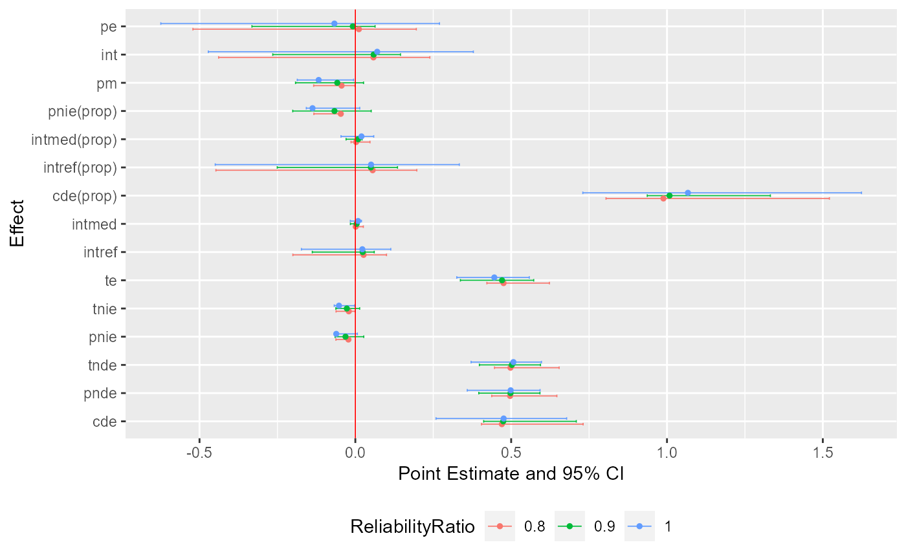

This function is used to plot the results of cmsens nicely via plotting functions
in the ggplot2 package. Additional layers can be added to this plot using other
plotting functions in the ggplot2 package.
ggcmsens( x, errorbar.width = 0.3, errorbar.size = 0.3, errorbar.position = position_dodge2(width = 0.5), point.size = 1, point.position = position_dodge2(width = 0.3), refline = TRUE, refline.colour = "red", refline.size = 0.3 )
| x | an object of class |
|---|---|
| errorbar.width | width of errorbars for confidence intervals. Default is |
| errorbar.size | size of errorbars for confidence intervals. Default is |
| errorbar.position | position adjustment for confidence intervals, either as a string,
or the result of a call to a position adjustment function. Default is
|
| point.size | size of points for point estimates. Default is |
| point.position | position adjustment for point estimates, either as a string, or
the result of a call to a position adjustment function. Default is
|
| refline | a logical value. If |
| refline.colour | colour of the reference line. Default is |
| refline.size | size of the reference line. Default is |
library(CMAverse) library(ggplot2) naive <- cmest(data = cma2020, model = "rb", outcome = "contY", exposure = "A", mediator = c("M1", "M2"), basec = c("C1", "C2"), EMint = TRUE, mreg = list("logistic", "multinomial"), yreg = "linear", astar = 0, a = 1, mval = list(0, "M2_0"), estimation = "imputation", inference = "bootstrap", nboot = 10)#> | | | 0% | |======= | 10% | |============== | 20% | |===================== | 30% | |============================ | 40% | |=================================== | 50% | |========================================== | 60% | |================================================= | 70% | |======================================================== | 80% | |=============================================================== | 90% | |======================================================================| 100%x <- cmsens(object = naive, sens = "me", MEmethod = "rc", MEvariable = "C1", MEvartype = "con", MEerror = c(0.1, 0.2))#> | | | 0% | |======= | 10% | |============== | 20% | |===================== | 30% | |============================ | 40% | |=================================== | 50% | |========================================== | 60% | |================================================= | 70% | |======================================================== | 80% | |=============================================================== | 90% | |======================================================================| 100% | | | 0% | |======= | 10% | |============== | 20% | |===================== | 30% | |============================ | 40% | |=================================== | 50% | |========================================== | 60% | |================================================= | 70% | |======================================================== | 80% | |=============================================================== | 90% | |======================================================================| 100%